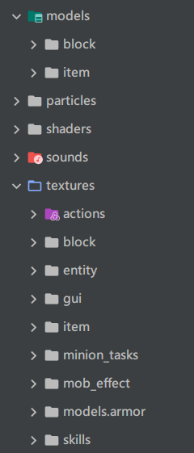

服务端/客户端
首先，要了解服务端和客户端这两者代表着什么
- 客户端就是你正在玩的那个游戏，有丰富的图形，你的键盘鼠标的移动能带来游戏界面的变化。
- 服务端是用来连接多人游戏的地方，如果连接过我的世界服务器就应该能知道，游玩前需要输入一串数字或英文字母来连接到一个服务器，服务端就是运行在服务器（同样是一台电脑，但是与普通电脑会有点区别）上的一个程序，服务端一般没有丰富的图形界面，只有通过命令的形式交互
- 多人游戏就是多个客户端连接到一个服务端
- 顺带一提，就算是单人游戏也创建了一个服务端
种类
在forge官方文档中再将服务端和客户端进行了划分，分为
- 物理客户端：客户端进程，也就是你打开客户端exe后那整个程序
- 物理服务端：服务端进程，与物理客户端类似，但没有一个丰富的图形界面来游玩（搭建过的应该都知道）
- 逻辑服务端：用于控制天气，生物生成，生物的ai等等，在单人游戏里，一个物理客户端可以包含一个逻辑服务端以及一个逻辑客户端
- 逻辑客户端：接受玩家的输入，如键盘鼠标等，并反馈给逻辑服务端以及渲染，同时也接受逻辑服务端的内容进行渲染
不同的端需要进行不同的操作
在Level这个类下，有一个布尔类型的值isClientSide，通过这个布尔值可以判断当前是逻辑客户端(true)还是逻辑服务端(false)
对于逻辑服务端和逻辑客户端需要进行不同的操作，我的理解是，如果需要对玩家或者世界数据等进行修改，确保不在逻辑客户端。比如破坏方块对世界进行了修改，则需要确保不在逻辑客户端中运行了破坏逻辑
分开调用
物理客户端不能调用 net.minecraft.server.dedicated 下的类，物理服务端不能调用 net.minecraft.client 下的类，否则会导致崩溃，Dist用于区分是物理客户端还是物理服务端
|
单人游戏中逻辑服务端和逻辑客户端都会使用Dist.CLIENT
单面模组（不需要双方都有）
有些例子如失落的城市，只是世界生成，并没有新的方块等，所以可以直接放到逻辑服务端，通过添加以下代码（官方给的）
|
服务端和客户端的区分蛮多的..我还是在使用的过程中慢慢的找bug体验吧
资源
分为两个，一个是用于视觉的，放在逻辑客户端上，称为assets，一个是用于玩法的，放在逻辑服务端上，称为data，assets由资源包控制，data由客户端控制，默认情况下，assets和data在src/main/resources下，需要确保你的assets和data路径下都是蛇形命名，单词间以_分割，比如iron_ingot代表铁锭
ResourceLocation
这个为类，具体在前面的文章介绍过，现在直接复制过来：
|
截取了一部分源码，其中有namespace和path，可以认为前面的是命名空间，为mod id，后面为你为这个方块/物品命名的名字。两者通过:合并，如我的世界中泥土这两者应为minecraft以及dirt，这一点可以通过IDEA debug认证：

可以看见namespace为minecraft，path为dirt，合在一起为minecraft:dirt
在哪
通常需要将材质放置在assets/“namespace”/“ctx”/“path”下，namespace和path为ResourceLocation里对应的字符串，ctx为一个特定的路径，放一张截图作为参考:

父目录为namespace，截图来自吸血鬼模组的assets，如果你现在要添加一个物品叫做铁匕首（iron_dagger），命名空间为mod id叫做 examplemod，则models下的item需要放置一个json文件作为描述这个材质内容，接着在textures下的item放置你的具体材质图片，如json文件为
|
则需要在textures下创建一个item文件夹（此处的文件夹名与上方json里的layer0那一行的item相同），里面放置你的材质图片并命名为iron_dagger.png，此处只举例了item，还有诸如Block等
数据包
官方文档没怎么说明，日后自己需要开发时会补充
语言
我的世界的语言界面由许多的语言，在这里将介绍如何写国际化的语言（英语）以及本地化（中文）
位置
位于assets/“namespace”/lang/“locale”.json，比如namespace为examplemod，locale为中文，则路径为assets/examplemod/lang/zh_cn.json
locale:
- 英文:en_us
- 中文:zh_cn
官方给出的样例:
|
examplemod为mod id，需要注意的是，注册不同类型的，比如方块和物品，前缀会不一样
可以通过覆写getOrCreateDescriptionId来建立你的，比如在Item中，默认的为
|
可以通过覆写为
|
或者
|
如果覆写成了第二种，当你继承你写的这个类并添加item时，翻译应为
|